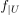
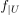
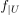

lokal homeomorph
1. Definition
Seien  und
und  topologische Räume, dann ist
topologische Räume, dann ist  ein lokaler homeomorphismus, falls für einen beliebigen Punkt
ein lokaler homeomorphismus, falls für einen beliebigen Punkt  eine Umgebung
eine Umgebung  existiert, so dass  eine topologische Einbettung ist.
existiert, so dass  eine topologische Einbettung ist.
Seien und topologische Räume, dann ist ein lokaler homeomorphismus, falls für einen beliebigen Punkt eine Umgebung existiert, so dass  eine topologische Einbettung ist.